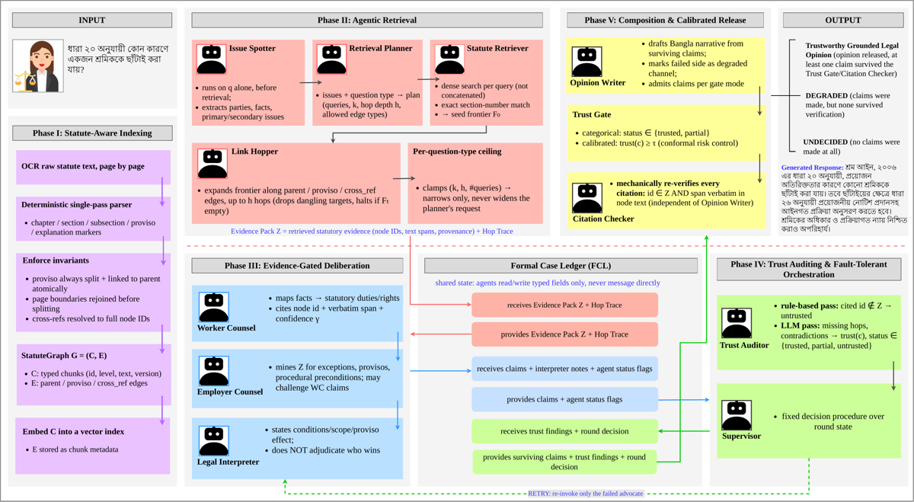
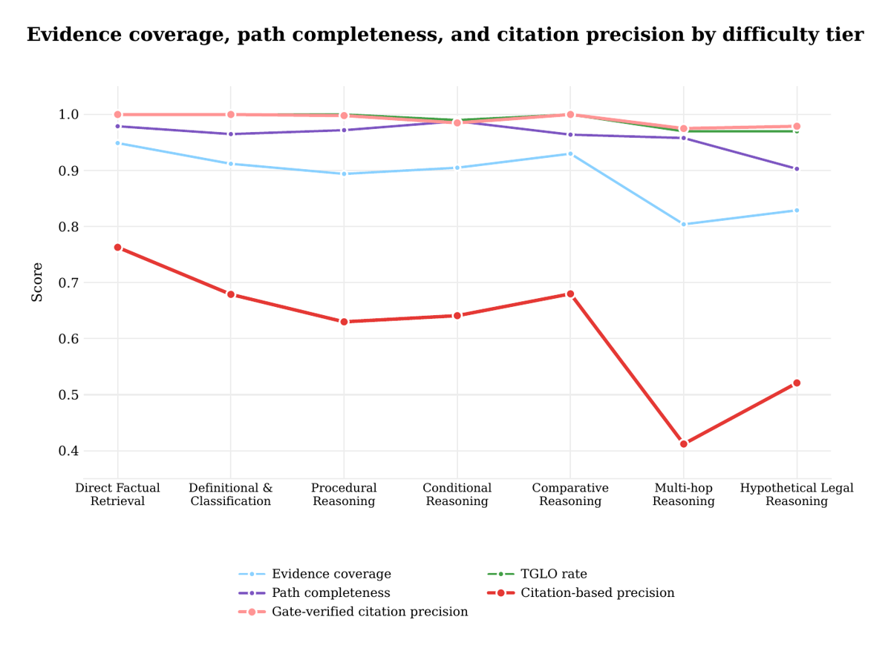
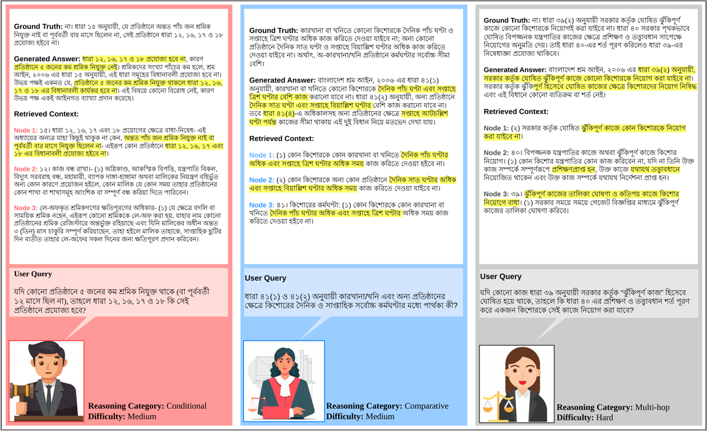

Convention de citation. Les tableaux du papier sont référencés par leur label LaTeX (
tab:main1,tab:C8…), non par leur numéro imprimé, pour lever toute ambiguïté de placement de float. Les sections de corps sont citées par nom de phase.
TL;DR. Pipeline RAG multi-agent (11 rôles, LangGraph) sur un statut unique (Bangladesh Labour Act 2006, bengali) où le grounding est imposé par le tooling — les avocats n'ont pas de handle de retrieval, ils ne peuvent citer que des node_id déjà posés sur un ledger partagé — et où la décision de publication est un seuil sur un score de confiance calibré par conformal risk control (CRC) au lieu d'un jugement LLM catégorique.
Claim principal, formulé précisément. À α=0,10 fixé, le gate calibré atteint un false-accept rate empirique de 0,081 (dans la borne) contre 0,147 (hors borne) pour le mode catégorique décidé par LLM, tout en augmentant la précision de citation vérifiée par le gate (0,991 vs 0,938) et le taux d'opinions décisives (99,0 % vs 97,6 %) [Tab. C8]. Claim secondaire : restreindre l'accès aux preuves au niveau outil fait passer les unsupported claims de 6,4 % à 1,2 % [Tab. C7].
⚠️ Ce qui rend ce papier intéressant pour nous n'est pas son score mais son unité de garantie : il ne certifie pas la réponse, il borne l'espérance du taux de claims non fidèles parmi les claims publiés. C'est une réponse structurellement différente au problème « pas de vérifieur exact » — voir §3 et §9.
Origine des tâches. Humaines, rédigées à la main. LabourActQA : 500 items construits directement sur le texte du Bangladesh Labour Act 2006 tel qu'amendé, « used exclusively for evaluation » [§4]. Aucun item généré par modèle, aucun item miné sur le web, aucun case law, aucun commentaire tiers [App. A.1, Ethics].
Pipeline de construction, étape par étape [App. A.2] :
1. Digitization — rendu page par page du PDF officiel, OCR vision (gemini-3-flash-preview [App. B.1]). La police source est une police bengali pré-Unicode legacy, donc les erreurs OCR sont un risque systématique reconnu [Ethics, Fairness].
2. Structuring — parsing par le chunker structure-aware (le même que StatuteGraph, §3.2) en unités chapitre / section / sous-section / proviso / cross-reference, pour que les annotateurs travaillent sur un statut où chaque unité citable est déjà délimitée.
3. Collaborative drafting — deux chercheurs rédigent conjointement chaque item (question bengali, réponse de référence, base statutaire, label de catégorie, label de difficulté), unité par unité, en lisant aussi l'unité parente/cible liée pour un proviso ou une cross-ref. Aucun item ne passe tant que les deux ne sont pas d'accord sur chaque champ. Pas de partition disjointe.
4. Independent verification — deux relecteurs (un expert du droit du travail, un doctorant/graduate), chacun seul, re-lisant l'unité statutaire, vérifiant la réponse contre le texte plutôt que contre la preuve fournie par les constructeurs. Jugements enregistrés avant que l'un ne voie l'autre.
5. Conflict resolution — discussion directe entre les deux relecteurs, sans vote majoritaire ni tiers arbitre. Un label ne change que si la discussion produit un accord sur l'erreur ; une ambiguïté génuine du texte est annotée contre l'item plutôt que forcée à résolution (détail de protocole intéressant).
Volume et distribution de difficulté [Tab. A1] : 500 items, 7 catégories × 3 tiers.
| Catégorie | Tier | N |
|---|---|---|
| Direct Factual Retrieval | Easy | 78 |
| Definitional & Classification | Easy | 76 |
| Procedural Reasoning | Medium | 61 |
| Conditional Reasoning | Medium | 74 |
| Comparative Reasoning | Medium | 70 |
| Multi-hop Reasoning | Hard | 74 |
| Hypothetical Legal Reasoning | Hard | 67 |
⚠️ Le tier est assigné par catégorie, pas par item [App. A.3] : la « difficulté » est donc une étiquette de type de raisonnement, pas une mesure. Aucune difficulté empirique (pass@k d'un modèle) n'est utilisée.
Filtrage par pass@k du modèle de base : aucun. Pas de filtrage par modèle, pas de seuil. Les items sont retenus sur accord humain seul.
Curriculum : sans objet (aucun entraînement).
Contamination et séparation train/test. Pas d'entraînement, donc pas de split train/test. Mais il existe un split de calibration : « running the board over a held-out LabourActQA split » [App. B.5]. ⚠️ Point critique et non résolu : la taille de ce split est non précisée, et le papier ne dit nulle part si le FAR de 0,081 [Tab. C8] est mesuré sur des claims disjoints du set de calibration. Toutes les autres tables sont explicitement « evaluated on all 500 questions » ; si Tab. C8 l'est aussi et que le split de calibration est inclus dans ces 500, la « confirmation empirique » de la garantie est partiellement in-sample. Voir §7.0 et §3.
Données SFT/IFT avant RL : aucune. Pas de fine-tuning, pas de cold start.
Coût humain. 2 rédacteurs + 2 relecteurs pour 500 items ; + 1 relecteur juridique pour labelliser chaque claim candidat faithful/unfaithful sur le set de calibration [App. B.5] ; + 2 évaluateurs pour l'éval humaine [App. B.6]. Heures : non précisé. Rémunération : non précisé. Taille du set de calibration : non précisé. Nombre de claims labellisés : non précisé.
Qualité d'annotation : Krippendorff's α = 0,86 sur les jugements indépendants pré-résolution des deux relecteurs [App. A.4]. ✅ C'est le seul chiffre d'accord inter-annotateur du papier — et il porte sur le dataset, pas sur les labels de calibration ni sur l'éval humaine.
⚠️ Limitation reconnue par les auteurs : le schéma publié n'expose pas de champ machine-readable gold_citations par item ; un exemple du format prévu est donné (["S12(3)", "S12(3).proviso"]) mais « planned but not yet implemented » [App. A.3]. Conséquence directe : LabourActQA ne permet pas d'évaluer le grounding citation par citation contre une vérité terrain. Tout ce qui ressemble à du « citation precision » dans le papier est donc soit auto-référentiel (contre le ledger du système), soit jugé par LLM, soit labellisé par un humain à la volée.
Ce n'est pas un env RL : c'est un graphe LangGraph de 11 agents sur un objet d'état partagé. Je le décris comme un harness parce que c'est à ce titre qu'il nous intéresse.
Observation. Chaque agent lit des champs typés du Formal Case Ledger (FCL), jamais un historique de messages : « agents communicate only through the Evidence Exchange Protocol (EEP), reading and writing typed fields on the FCL » [§3.1]. Concrètement [Fig. workflow] :
- Issue Spotter : la question brute q seule, avant tout retrieval.
- Retrieval Planner : les CaseSeeds + (sur re-entrée) une retrieval request du Trust Auditor nommant seed nodes, edge types, hop budget.
- Worker/Employer Counsel : CaseSeeds + Evidence Pack Z + les claims adverses déjà au dossier (rounds ≥ 1). Rien d'autre.
- Trust Auditor : claims + Hop Trace + Z.
- Opinion Writer : les claims survivants + flags de statut par agent.
Espace d'actions / outils. 11 rôles [§3.1] : Issue Spotter, Retrieval Planner, Statute Retriever, Link Hopper, Worker Counsel, Employer Counsel, Legal Interpreter, Trust Auditor, Supervisor, Opinion Writer, Citation Checker. Supervisor et Citation Checker sont déterministes, sans appel LLM [App. B.1] — donc 9 agents LLM.
Signatures recopiées depuis les prompts [App. D] :
- Issue Spotter → CaseSeeds{parties:[{role: worker|employer|other, name_or_ref}], facts:list[str], primary_issues:list[str], secondary_issues:list[str], legal_concepts:list[str], missing_facts:list[str], question_type: one of {direct_factual_retrieval, definitional_classification, procedural_reasoning, conditional_reasoning, comparative_reasoning, multi_hop_reasoning, hypothetical_legal_reasoning, other}}
- Retrieval Planner → {semantic_queries, seed_nodes, hop_edges, max_hops h, k, rationale, plan_confidence}
- Worker|Employer Counsel → list[Claim{claim_text, reasoning_steps, cited_evidence:[{node_id, span, hop_path_id?}], rebuts_claim_id?, confidence}]
- Modèle de claim formel [§3.1] : c = (side, text, R={(id, span)}, γ∈[0,1]).
Le point de design central — le grounding par restriction d'outil. Le prompt du Worker Counsel le dit explicitement : « You never call retrieval yourself: enforced in code, since the invoking function has no retrieval handle. You argue only from the evidence pack you are given. » [App. D]. Et : « If the evidence pack supports no claim for your side, return an empty claims list rather than inventing one » ; « a quoted span stays exactly as it appears in the evidence, never translated » [App. D]. ✅ C'est une contrainte de harness, pas une consigne de prompt — c'est ce qui distingue ce papier des systèmes de débat juridique cités en §2.2.
Graph index (StatuteGraph) [§3.2]. G=(C,E), E ⊆ C×C×{parent, proviso, cross_ref}. Parser déterministe single-pass, offline, hors agent. Règles recopiées : bornes de chunk uniquement là où la numérotation du statut dit qu'une nouvelle unité commence (headings de chapitre, sections numérotées y compris lettrées par amendement, numéros de sous-section, marqueurs proviso/explanation, sous-clauses lettrées) ; un proviso est toujours splitté en chunk propre, avec le lien parent-enfant écrit atomiquement pour qu'il ne puisse pas exister sans référence parente ; les frontières de page OCR sont rejointes avant parsing via la ponctuation finale de clause ; une cross-ref nommant plusieurs sections résout vers toutes les sections nommées. Chunks taggés d'un identifiant de version de statut, embarqués dans un index vectoriel ; l'edge set est stocké en métadonnée de chunk, pas dans une base graphe (Milvus Lite, un record par chunk [App. B.1]).
Multi-turn, horizon. Multi-turn borné et très court. Moyenne empirique : 1,05 round de retrieval [Tab. C10], max 1,18 (Hypothetical) [Tab. main2]. Budget de retry retrieval capé à 2 rounds ; recursion limit LangGraph 50 [App. B.1]. Les seuls loop-backs sont : retry d'un advocate en échec, et demande de retrieval supplémentaire ; « the final Trust Gate fails closed on a rejected claim, guaranteeing termination » [§3.1].
Budgets de retrieval, clampés à l'exécution [Tab. C11, App. B.2] — ceilings par type de question, qui ne peuvent que rétrécir un plan, jamais l'élargir :
| Type de question | k ceiling | h ceiling | Query ceiling |
|---|---|---|---|
| Direct Factual / Definitional & Classification | 5 | 1 | 1 |
| Procedural / Conditional | 8 | 2 | 2 |
| Comparative | 8 | 2 | 4 |
| Multi-hop | 10 | 3 | 4 |
| Hypothetical Legal | 8 | 2 | 2 |
⚠️ Reconnu en Limitations : ceiling fixe et non appris, « can only narrow an overly broad plan, not widen a conservative one ».
Gestion du contexte long : non précisé (pas de troncature, résumé ou mémoire décrits — l'Evidence Pack est petit par construction, k≤10, h≤3).
Exécution. Pas de sandbox ni de conteneur : appels API OpenAI + index vectoriel local Milvus Lite, Python 3.11+ [App. B.1]. Déterminisme : T=0 pour les agents board, mais aucune garantie de déterminisme réelle (API LLM). Reset : chaque question repart d'un FCL vierge, le statut est version-pinné à un snapshot identifié. Timeouts : non précisé.
Gestion des erreurs. C'est le cœur de la Phase IV [§3.5]. Statut par agent ok / partial / failed. Les deux advocates sont indépendants (« neither depends on the other, so a failed call is recorded per-agent rather than aborting the round »). Le Legal Interpreter tourne « once over whichever claims are present, one-sided if one advocate failed ». Procédure de décision du Supervisor, recopiée [§3.5] :
1. Au round 0, si exactement un advocate a échoué → retry seulement cet advocate.
2. Sinon, si un finding untrusted porte une retrieval request et que le budget de round n'est pas épuisé → demander du retrieval.
3. Sinon, si le budget est épuisé ou qu'au moins un finding n'est pas untrusted → passer à la composition.
4. Si le budget est presque épuisé sans evidence trusted → abort soft vers composition avec ce qui existe.
Sorties mal formées : « any claim for which the LLM pass returns no finding is assigned untrusted explicitly » [§3.5] — fail-closed au niveau du claim. ✅ Bon pattern.
Exemple de trajectoire. Le papier donne 3 runs travaillés [Fig. LabourCrew_Example] : requête bengali → Retrieved Context (3 nœuds) → Generated Answer → Ground Truth. Cas Conditional : Section 15 exempte les établissements de moins de 5 travailleurs des Sections 12, 16, 17, 18. Cas Comparative : contraste des plafonds horaires des mineurs entre Sections 41(1) et 41(2). Cas Multi-hop : chaîne Sections 39(2) → 40, montrant que l'interdiction de travail dangereux tient malgré l'exception « formation » de la Section 40.
⚠️ Observation forte : cette figure ne montre aucun élément du ledger. Pas de claim individuel, pas de trust(c), pas de τ, pas de décision de gate, pas de claim rejeté. Le papier ne publie nulle part une seule valeur de score de trust, ni la valeur du seuil τ retenu, ni un exemple de claim rejeté. Pour un papier dont la thèse est l'auditabilité, c'est une lacune majeure (voir §7 Solidité).
⚠️ Détail révélateur dans le panneau Conditional : la réponse générée conclut explicitement que les deux parties sont d'accord (« উভয় পক্ষই একমত ») et qu'il n'y a pas de dispute. La délibération adversariale s'effondre en accord sur les catégories non contentieuses — ce que les prompts anticipent d'ailleurs : « For direct factual, definitional, and procedural questions, there may be no real dispute — state the rule plainly from your side; overlap with [the other] Counsel is useful cross-verification, not redundancy » [App. D]. Autrement dit, sur 4 des 7 catégories (≈ 60 % des items), l'« adversarial deliberation » est en réalité une double lecture redondante, pas un débat.
Aucun reward (pas d'entraînement). Le vérifieur est la pièce maîtresse — je le décompose en trois couches.
[§3.5] :
trust(c) = w_v·validity(c) + w_f·fidelity(c) + w_p·provenance(c) + w_s·γ(c)
w_v = 0.35, w_f = 0.25, w_p = 0.20, w_s = 0.20 (somme = 1)
validity(c) = fraction des identifiants cités qui existent dans Z.fidelity(c) = fraction des spans cités trouvés verbatim (normalisé sur les espaces) dans le texte de leur nœud ; span manquant ou vide = non vérifié.provenance(c) = moyenne de la retrieval provenance sur les citations valides. ⚠️ « retrieval provenance » n'est jamais défini quantitativement — c'est 20 % du score et la définition est non précisée (on devine un lien avec le Hop Trace, qui enregistre nœud source / type d'arête / profondeur de hop pour chaque nœud expansé [§3.3], mais rien ne le dit).γ(c) = la confiance auto-déclarée de l'advocate, clippée à [0,1].trust(c)=0 inconditionnellement.⚠️ 20 % du score de trust est la confiance auto-déclarée du générateur. C'est le terme le plus attaquable : aucune calibration de γ n'est mesurée, aucune ablation ne retire γ du score. Dans un cadre RL ce serait un vecteur de reward hacking évident ; ici, sans entraînement, le modèle ne peut pas l'exploiter par gradient — mais il pourrait l'exploiter par prior (un LLM qui sur-déclare sa confiance par défaut décale mécaniquement tous les scores vers le haut, et le CRC absorbe ce décalage en remontant τ, donc la garantie tient toujours ; ce qui bouge, c'est le taux d'acceptation, pas la borne). Bonne nouvelle pour la garantie, mauvaise nouvelle pour l'utilité.
Deux passes [§3.5], dans cet ordre :
1. Passe déterministe rule-based : tout claim dont les identifiants cités n'existent pas tous dans Z → untrusted. (Filtre dur, pré-LLM.)
2. Passe LLM sur les claims restants : audit des missing required hops et des contradictions inter-side → statut trusted / partial / untrusted + éventuelle retrieval request structurée. Tout claim sans finding → untrusted explicitement.
⚠️ Le prompt du Trust Auditor n'est pas publié (App. D ne contient que Issue Spotter, Retrieval Planner, Worker Counsel, Employer Counsel — 4 prompts sur 9 agents LLM). Manquent : Legal Interpreter, Trust Auditor, Opinion Writer, Statute Retriever/Link Hopper. Pour un papier qui affirme que « the full codebase and all prompts will be released », l'annexe publie moins de la moitié des prompts.
[§3.6] Indépendamment du mode de gate, re-vérifie mécaniquement chaque citation des claims acceptés : l'identifiant existe dans Z, ET le span est trouvé verbatim (whitespace-normalized) dans le texte du nœud cité. Un claim qui échoue est retiré du set accepté sans reboucler le board. ✅ Détail d'ingénierie intéressant : « the Citation Checker and the trust score's fidelity term share one whitespace-normalization routine, so a genuinely correct quotation cannot pass the gate and then be silently stripped, or vice versa, purely over OCR formatting » [§3.6]. C'est exactement le genre de cohérence de vérifieur qu'on veut dans un env RL.
Mécanisme [§3.6, App. B.5]. Deux modes :
- categorical : claim accepté ssi son finding est trusted ou partial (décision LLM).
- calibrated : claim accepté ssi trust(c) ≥ τ, avec τ fixé offline par CRC : le plus petit τ de la grille candidate satisfaisant
(n/(n+1))·R̂(τ) + 1/(n+1) ≤ α, avec α = 0,10,
où R̂(τ) est le false-accept rate empirique sur le set de calibration. Garantie annoncée : E[false-accept rate(τ)] ≤ α sur les claims futurs échangeables. Si aucun τ de la grille ne satisfait la borne, fail-closed : τ = +∞, tous les claims rejetés.
Set de calibration [App. B.5] : board tourné sur un split held-out de LabourActQA, log du score de trust du Trust Auditor live pour chaque claim candidat, puis un relecteur du domaine juridique labellise chaque claim faithful / unfaithful sous le même protocole que les réponses de référence.
✅ Ce que la garantie couvre effectivement. 1. La formule est la bonne : c'est exactement la borne CRC d'Angelopoulos et al. (2022) pour une perte bornée dans [0,1], avec le terme d'inflation 1/(n+1) et le choix du plus petit λ admissible. Rien d'inventé. 2. L'objet borné est l'espérance du taux de claims non fidèles parmi les claims acceptés, sur le tirage conjoint (set de calibration, claim futur). 3. Elle est distribution-free au sens où aucune hypothèse paramétrique n'est faite sur la distribution des scores — c'est la seule chose que « distribution-free » veut dire ici. 4. Elle est falsifiable, et le papier la teste : 0,081 ≤ 0,10 [Tab. C8]. Le mode catégorique ne peut pas être falsifié de cette manière car il ne vise rien. 5. Elle est conservative par construction via le fail-closed.
❌ Ce que la garantie NE couvre PAS — huit trous, du plus grave au moins grave.
faithful / unfaithful, c'est-à-dire le claim est-il soutenu par la preuve citée. Les auteurs l'écrivent eux-mêmes ailleurs : « a claim can be well-cited and still substantively incorrect » [Ethics, Risks]. La garantie ne borne donc ni l'erreur juridique, ni la complétude, ni le choix de la bonne règle, ni l'omission d'une disposition gouvernante jamais retrouvée par le retrieval. Un claim parfaitement cité sur la mauvaise section passe le gate et compte comme non false-accept. ⚠️ C'est la limite décisive. Un décideur qui lit « false-accept rate borné à 10 % » comprendra « 10 % d'erreurs » ; le papier borne autre chose.Valeurs jamais rapportées (toutes nécessaires pour auditer la garantie) : n (taille du set de calibration), τ (le seuil retenu), la grille candidate de τ, le nombre total de claims évalués, la distribution des scores de trust, un intervalle de confiance sur le 0,081. Toutes non précisées.
Aucun stress-test adversarial. Reconnu : « Evaluation … excludes longitudinal analysis, deployment-setting studies, or adversarial stress-testing » [Limitations, Evaluation scope]. Le vérifieur n'a pas été attaqué.
RAGAS avec juge GPT-4.1 à T=0,1, embeddings bge-m3, appliqué uniformément à toutes les configurations [App. B.6]. 5 métriques : Answer Relevancy, Context Relevancy, Context Precision, Context Recall, Noise Sensitivity. Les prompts RAGAS ne sont pas recopiés (bibliothèque tierce). ⚠️ Le juge n'est jamais validé contre les humains : l'éval humaine [Tab. main3] ne porte que sur les sorties de LabourCrew, sur un échantillon de taille non précisée, sans aucune baseline — elle ne peut donc pas calibrer le juge. Les auteurs listent eux-mêmes des biais du juge : « passage-relevance judgments scored against a single reference answer penalize retrieval correctly serving comparative or multi-hop questions » et « claim-level entailment checks can penalize a narrative that legitimately restates multiple sources » [Limitations].
Aucun entraînement : pas de RL, pas de SFT, pas de DPO, pas de reward model, pas de gradient. Tout est prompting + orchestration + un seul scalaire calibré offline (τ). Aucun hyperparamètre d'optimisation n'existe.
La boucle, à la place (c'est ce qui joue le rôle de « politique ») :
q → Issue Spotter (CaseSeeds)
→ [Phase II] Planner → Statute Retriever (dense, 1 query = 1 search, union top-k)
+ résolution exacte des numéros de section nommés dans q
→ Link Hopper (h hops sur parent/proviso/cross_ref, halt si hop vide)
→ fusion dédupliquée + clamp aux ceilings (Tab. C11)
→ Evidence Pack Z + Hop Trace, écrits au FCL
→ [Phase III] Worker Counsel ∥ Employer Counsel (en parallèle, sans outil de retrieval)
→ Legal Interpreter (sur les claims présents, même unilatéraux)
→ [Phase IV] Trust Auditor (passe rule-based puis passe LLM) → trust(c) + statut
Supervisor (procédure de décision fixe, §2)
↺ retry de l'advocate échoué | ↺ retrieval supplémentaire (budget 2 rounds)
→ [Phase V] Opinion Writer → Trust Gate (trust(c) ≥ τ) → Citation Checker (strip)
→ statut ∈ {TGLO si ≥1 claim accepté, DEGRADED si claims faits mais aucun survivant,
UNDECIDED si aucun claim fait}
Paramètres réels du système [App. B.1, B.2] : T=0 (agents), T=0,1 (juge), budget retrieval = 2 rounds, recursion limit = 50, k/h/queries par Tab. C11, α=0,10, poids du trust (0,35 / 0,25 / 0,20 / 0,20).
Compute : non précisé (aucune GPU/TPU-heure, aucun compte de tokens, aucun coût $). Seul proxy : la latence (§6).
Dynamique : sans objet (pas de courbes d'entraînement). L'analogue est la latence et le nombre de rounds par catégorie [Tab. main2].
Pas de reward, donc pas de reward hacking au sens RL. Ce qui est documenté :
| # | Comportement | Comment détecté | Correction |
|---|---|---|---|
| 1 | Advocates citant des preuves jamais posées sur le ledger (donc invérifiables par le gate quelle que soit leur pertinence) | Ablation avec accès retrieval libre : 6,4 % d'unsupported claims [Tab. C7] | EEP : retrait du handle de retrieval au niveau code → 1,2 % [Tab. C7] |
| 2 | Chunk topiquement correct mais juridiquement incomplet (règle séparée de son proviso) | Ablation de chunking : fixed-512 0,71, whole-chapter 0,63 vs structure-aware 0,82 en Internal Faithfulness [Tab. C2] | Parser structure-preserving, proviso toujours splitté et lié atomiquement [§3.2] |
| 3 | Échec d'un agent propageant en échec de run | Pipeline séquentiel : 71/500 runs échoués (14,2 %) [Tab. C9] | Supervisor + isolation + retry ciblé → 5/500 (1,0 %) |
| 4 | Sortie LLM du Trust Auditor sans finding | Contrôle explicite du code | Assigné untrusted par défaut (fail-closed) [§3.5] |
| 5 | Gate qui accepte puis Citation Checker qui retire pour cause de formatage OCR | Anticipé au design | Routine unique de whitespace-normalization partagée entre fidelity et le Citation Checker [§3.6] |
| 6 | Citation correcte mais post-rationalisée (le modèle attache une citation à une assertion déjà formée) | Non détecté ici ; cité depuis la littérature (wu2024) [§1, §2.1] | ❌ Non traité. Aucun mécanisme ne teste la dérivation. C'est précisément le résidu que le FAR de 8,1 % capture |
| 7 | Retrieval sous-connecté entre chapitres | Reconnu en Limitations | ❌ Non corrigé : « cross-reference extraction is restricted to same-chapter references » |
| 8 | Erreurs OCR (police bengali legacy pré-Unicode) indexées silencieusement | Reconnu en Ethics | Mitigation documentaire seulement : « documentation instructs that OCR output be spot-checked against the source PDF » |
Comportement émergent inattendu (positif), relevé par les auteurs : la latence baisse quand on ajoute la machinerie de tolérance aux pannes (31,2 s → 24,3 s [Tab. C9]), au lieu d'augmenter — parce qu'un run échoué à mi-parcours gaspille le compute déjà dépensé [App. C, RQ3]. De même, StatuteGraph complet est moins latent que dense+link-hops seul (24,3 s vs 25,8 s [Tab. C1]), la parcimonie du Planner compensant le coût de traversée [App. C, RQ1].
Comportement émergent inattendu (négatif), relevé par moi ⚠️ : la délibération adversariale converge en accord sur les catégories non contentieuses, et les prompts le normalisent explicitement (« there may be no real dispute … overlap … is useful cross-verification, not redundancy » [App. D]). Sur ≈ 60 % du benchmark (les 4 catégories Easy/Procedural), on paie deux appels LLM adversariaux pour obtenir une double lecture concordante. Les ablations confirment que les advocates pèsent peu : retirer Employer Counsel coûte 0,991 → 0,978 en GVCP, retirer Worker Counsel 0,991 → 0,964 [Tab. C5] — très loin du Trust Auditor (0,991 → 0,842) ou du Citation Checker (0,991 → 0,912).
Oui, et c'est à porter au crédit du papier. Une garantie conformelle est trivialement satisfaisable en rejetant tout ; le fail-closed du gate (τ=+∞) rend ce mode atteignable. Le papier mesure l'utilité résiduelle [Tab. C10] :
| Quantité | Valeur |
|---|---|
| Claim Acceptance Rate | 87,6 % (donc 12,4 % des claims rejetés) |
| TGLO Rate (opinion décisive) | 99,0 % |
| Degraded Output Rate | 1,0 % |
| Fully Undecided Rate | 0,0 % |
| Citation-Checker Pass Rate | 99,2 % |
✅ Donc : la borne est tenue sans s'abstenir — 0 % d'abstention totale, 1 % de dégradé, et le mode calibré a même un meilleur TGLO Rate que le catégorique (99,0 % vs 97,6 % [Tab. C8]). La sécurité n'est pas achetée contre l'utilité sur ce benchmark.
⚠️ Trois réserves qui modèrent fortement ce constat : 1. α=0,10 est lâche. À 10 % de false accepts tolérés, le gate ne mord presque pas. Aucune courbe utilité/α n'est tracée : on ne sait pas ce qui se passe à α=0,02 ou α=0,01 — précisément les régimes qu'un déploiement juridique réel exigerait. C'est l'expérience la plus évidente du papier, et elle est absente. 2. Le mécanisme d'abstention annoncé n'est presque jamais exercé. Le triptyque TGLO/DEGRADED/UNDECIDED est vendu partout comme la garantie de sûreté (« lets it decline to answer rather than assert an unsupported claim » [Ethics]) mais s'active dans 1 % des cas, jamais en refus total. Au niveau opinion, ce système répond toujours. Ce n'est pas un système de prédiction sélective, c'est un système qui filtre des claims à l'intérieur d'une réponse toujours produite. 3. Le taux de faux rejets n'est pas mesuré (§3.5) : on ne sait pas si les 12,4 % de claims rejetés étaient mauvais.
| Chiffre annoncé | Où il est annoncé | Source dans le papier | Verdict |
|---|---|---|---|
| FAR empirique = 0,081, dans la cible α=0,10 | Abstract ; Conclusion | Tab. C8 (Calibrated CRC : 0,081 ; α=0,10 ; « Guarantee Holds? Yes ») | confirmé |
| Answer Relevancy 0,862 > 0,839 / 0,815 / 0,828 (HyDE / Graph-RAG / Hierarchical) | Abstract | Tab. main1 : LabourCrew 0,862 ; HyDE 0,839 ; Graph-RAG 0,815 ; Hierarchical 0,828 | confirmé (ordre des baselines dans la phrase respecté) |
| « degrades gradually rather than catastrophically as question difficulty increases » | Abstract | Tab. main2 : GVCP 1,000→0,975/0,979 et TGLO 100 %→97 % restent plats ✅, mais Citation-Based Precision chute 0,763 → 0,412 (−46 % relatif) ❌ | sur-généralisé — vrai pour GVCP et TGLO, faux pour CBP ; l'abstract ne nomme aucune métrique. La Conclusion, elle, concède « reliability still thins at multi-hop reasoning » |
| « making citation to unretrieved text impossible » | Abstract ; Conclusion (« structurally impossible ») | Tab. C7 : le mode role-isolated conserve 1,2 % d'unsupported claims | sur-généralisé — strictement, « unsupported » ≠ « unretrieved » (un span non verbatim dans un nœud de Z est unsupported sans être unretrieved), donc pas formellement contredit, mais le mot « impossible » n'est pas soutenu par un chiffre à zéro |
| Retrieval precision 0,52 → 0,78 | Conclusion | Tab. C1 : Dense only 0,52 → StatuteGraph (Full) 0,78 | confirmé |
| EEP : unsupported claims 6,4 % → 1,2 % ; faithfulness 0,77 → 0,82 | Conclusion | Tab. C7, exactement ces quatre valeurs | confirmé |
| Failed runs 14,2 % → 1,0 %, « order of magnitude » | Conclusion | Tab. C9 : 71/500 (14,2 %) → 5/500 (1,0 %) | confirmé (14,2 / 1,0 = 14,2×, « order of magnitude » tient) |
| 0,081 ≤ α vs 0,147 > α | Conclusion ; §6 RQ4 | Tab. C8 | confirmé |
| « sustains 0,991 aggregate citation precision throughout » | Conclusion | Tab. C10 : GVCP 0,991. Vérifié : moyenne pondérée par N sur les 7 catégories de Tab. main2 = 0,99102 ✅ | confirmé |
| Multi-hop 0,412 vs direct lookup 0,763 | Conclusion | Tab. main2, colonne CBP | confirmé |
| « practical gap of roughly 6,6 %, relative reduction of about 45 % » | App. C, RQ4 | 0,147 − 0,081 = 0,066 ✅ ; 0,066/0,147 = 44,9 % ✅ | confirmé |
| Krippendorff's α = 0,86 | App. A.4 | Unique mention, pas de table | confirmé (non re-vérifiable, mais cohérent) |
| Latence 24,3 s, rounds 1,05 | Tab. C10, Conclusion implicite | Moyennes pondérées par N depuis Tab. main2 : 24,2954 ✅ et 1,05042 ✅ | confirmé |
| τ (le seuil calibré) | nulle part | — | introuvable |
| n (taille du set de calibration) | nulle part | — | introuvable |
| Nombre total de claims évalués | nulle part | — | introuvable |
| Taille de l'échantillon d'éval humaine | Tab. main3 (« a sample ») | Aucune valeur | introuvable |
| « contradiction residual » (métrique nommée en App. B.6) | App. B.6 | Jamais rapportée | introuvable |
✅ Vérification de cohérence interne que j'ai conduite. J'ai recalculé les moyennes pondérées par N des 7 catégories [Tab. main2] contre l'agrégat [Tab. C10] : Latency 24,295 vs 24,3 ; Rounds 1,0504 vs 1,05 ; EC 0,88995 vs 0,890 ; PC 0,96196 vs 0,962 ; GVCP 0,99102 vs 0,991 ; TGLO 99,006 % vs 99,0 % ; CBP 0,61995 vs 0,62. Les sept colonnes reproduisent l'agrégat exactement, comme annoncé en App. B.6. C'est une preuve forte que les tables sont générées depuis des traces réelles et non recopiées à la main.
⚠️ Collision numérique à signaler. Noise Sensitivity de LabourCrew = 0,081 [Tab. main1] et Empirical False-Accept Rate = 0,081 [Tab. C8] sont deux quantités totalement différentes (métrique RAGAS jugée par GPT-4.1 vs taux mesuré contre labels humains) portant la même valeur à trois décimales. Coïncidence possible, mais l'abstract juxtapose les deux tables sans la relever. À vérifier si on cite ce papier.
Gate calibré vs catégorique [Tab. C8] — le résultat central :
| Gate Mode | GVCP | FAR empirique | Target α | Garantie tient ? | TGLO Rate |
|---|---|---|---|---|---|
| Categorical (LLM-decided) | 0,938 | 0,147 | N/A | Non | 97,6 % |
| Calibrated (CRC) | 0,991 | 0,081 | 0,10 | Oui | 99,0 % |
⚠️ La colonne « Target α : N/A » pour le mode catégorique est rhétorique : on compare un mode qui ne vise aucune cible à un mode qui en vise une, puis on déclare le premier en échec. La formulation honnête est « le mode catégorique réalise 0,147, au-dessus de 0,10 ». Les auteurs le concèdent en partie eux-mêmes en App. C (RQ4) : « the practical gap … is real but moderate », en défendant que « the more consequential distinction is epistemic status, not gap size ». Argument recevable — mais il repose entièrement sur la validité de la garantie, qui a les huit trous du §3.4.
Décomposition du Trust Gate [Tab. C6] — ablation la plus informative :
| Configuration | Internal Faithfulness | Citation Error Rate | Unsupported Claims | GVCP |
|---|---|---|---|---|
| No Trust Gate | 0,71 | 0,441 | 8,9 % | 0,559 |
| Citation Checker Only | 0,76 | 0,158 | 7,5 % | 0,842 |
| Trust Auditor Only | 0,79 | 0,088 | 4,8 % | 0,912 |
| Full Trust Gate | 0,82 | 0,009 | 1,2 % | 0,991 |
→ Les deux contrôles sont complémentaires, pas redondants : le Citation Checker vérifie qu'une citation existe et est verbatim, le Trust Auditor vérifie la complétude évidentielle et les contradictions. Combinés, ils font mieux que chacun seul par une large marge (0,088 et 0,158 → 0,009 en citation error).
Orchestration [Tab. C9] : Sequential 71/500 échecs (14,2 %, 31,2 s) → Supervisor Only 24/500 (4,8 %, 28,1 s, recovery 66,2 %) → +Retry 6/500 (1,2 %, 25,8 s, recovery 75,0 %) → Full 5/500 (1,0 %, 24,3 s, recovery 16,7 %). Fiabilité et latence s'améliorent ensemble.
Retrieval [Tab. C1] : Dense 0,52 / TGLO 82,3 % → +BM25 0,69 / 91,6 % → +Link Hops 0,74 / 96,2 % → StatuteGraph 0,78 / 99,0 %. Chunking [Tab. C2] : fixed-512 0,71, recursive 0,76, whole-chapter 0,63, section-only 0,74, structure-aware 0,82. Hop depth [Tab. C4] : 0,72 / 0,78 / 0,81 / 0,82 pour h=0..3 — rendement décroissant net au-delà de h=2. Planning [Tab. C3] : static 0,71 / 1,89 rounds → planner+replanning 0,91 / 1,05 rounds (précision ↑ ET rounds ↓ simultanément).
Leave-one-out des agents [Tab. C5], classés par dégât sur GVCP : Trust Auditor (−0,149) ≫ Citation Checker (−0,079) > Link Hopper (−0,068) > Worker Counsel (−0,027) > Employer Counsel (−0,013) > Legal Interpreter (−0,009). ⚠️ Les trois agents de délibération adversariale sont les trois moins importants. Ce que le papier vend comme « adversarial deliberation » contribue marginalement ; ce qui porte le résultat, c'est la vérification (Auditor + Checker) et la structure du retrieval (Link Hopper).
Éval humaine [Tab. main3], 2 évaluateurs, échantillon de taille non précisée, Likert 1–5 : Citation Quality 4,79±0,42 · Faithfulness 4,74±0,46 · Overall 4,68±0,45 · Clarity 4,67±0,49 · Correctness 4,61±0,54 · Completeness 4,52±0,61. ⚠️ Toutes les dimensions > 4,5 sur un échantillon de sorties du seul système proposé, sans baseline, sans accord inter-annotateur — signal quasi nul.
Rien. Un seul statut, une seule juridiction, une seule langue. Aucun transfert mesuré. Reconnu explicitement : « demonstrated behavior does not by itself establish how the framework would perform on a different statute, domain, or language without re-indexing and re-annotation » [Limitations] ; et « extending to case law or common-law reasoning without comparable structure would likely require rethinking the indexing scheme, not a direct transfer » [Limitations]. ⚠️ Cette dernière phrase est une admission importante pour nous (§9).
Par ordre de contribution mesurée : (1) le Trust Gate complet (citation error 0,441 → 0,009, Tab. C6) ; (2) l'EEP (unsupported 6,4 % → 1,2 %, Tab. C7) ; (3) l'orchestration fault-tolerant (14,2 % → 1,0 % d'échecs, Tab. C9) ; (4) le retrieval structuré (0,52 → 0,78, Tab. C1) ; (5) le chunking structure-aware (0,71/0,63 → 0,82, Tab. C2) ; (6) très loin derrière, la délibération adversariale (Tab. C5). ✅ Les ablations C7 et C8 isolent proprement leur variable (« identical in every respect except one » [§6 RQ2] ; même système, seul le mode de gate change [App. B.4 (iii)]).
Non étudié. Un seul modèle (gpt-4o-mini), un seul dataset (500 items), un seul α. Aucun effet de taille de modèle, de nombre de tâches ou de compute. Les auteurs listent « adapting it to newer foundation models » en future work [Limitations].
full.tex ni dans src/custom.bib (les seuls liens GitHub de la bibliographie pointent vers RAGAS, Milvus et BanglaNLG — des outils tiers). Le code et le dataset sont annoncés au futur : « will be released under the MIT License » [App. B.1]. 4 prompts publiés sur 9 agents LLM. τ, n, la grille de seuils et le nombre de claims sont absents. Rien n'est reproductible en l'état.Cases d'evidence (6 applicables ; ce n'est ni une taxonomie ni un survey, donc aucun n.a.) :
1. baselines — faux : voisins les plus proches jamais comparés, compute non apparié, modèle daté.
2. ablation — vrai : C7 et C8 isolent chacune une seule variable, le reste tenu fixe.
3. variance — faux : aucun seed ni IC, en particulier sur 0,081.
4. coherence — vrai : reconstruction exacte des agrégats, abstract traçable.
5. eval — faux : juge non validé, éval humaine à n inconnu sans accord, labels de calibration mono-annotateur.
6. repro — faux : release annoncée au futur, aucune URL, vérifié par inspection du source.
→ evidence = 2/6.
Plausible mais fragile — et le mécanisme mérite qu'on le réplique, pas les chiffres. La cohérence interne est au-dessus de la moyenne du corpus (les tables se reconstruisent au chiffre près), les ablations sont honnêtes et les Limitations exceptionnellement lucides — les auteurs nomment eux-mêmes six des huit trous que j'ai listés au §3.4. Mais : evidence 2/6, échelle minuscule, aucun artefact, aucune variance, et surtout la garantie conformelle — qui est la seule raison de lire ce papier — n'est pas auditable faute de τ, de n, de la définition exacte de R̂ et de la preuve de disjonction calibration/test. À traiter comme une preuve de concept d'un pattern (CRC sur un score de trust déterministe, dans un pipeline juridique), pas comme une mesure.

Ce qu'il faut voir : la topologie de grounding, lisible d'un coup d'œil. (a) Le FCL est au centre : toutes les flèches passent par lui, aucun agent ne parle à un autre directement — c'est ce qui rend le système auditable. (b) La Phase III (bleu, advocates) reçoit l'Evidence Pack Z mais n'a aucune flèche sortante vers la Phase II (rouge, retrieval) : c'est la matérialisation graphique de l'EEP — les advocates n'ont pas de chemin vers le retrieval. (c) Le seul chemin de retour est la flèche verte pointillée en bas, « RETRY: re-invoke only the failed advocate », qui repart de la Phase IV vers la Phase III — l'isolation de faute. (d) Le Trust Gate (jaune, Phase V) affiche les deux modes côte à côte : categorical: status ∈ {trusted, partial} contre calibrated: trust(c) ≥ τ (conformal risk control) — c'est littéralement un if sur un scalaire. (e) Le Citation Checker est annoté « independent of Opinion Writer » : la vérification finale ne fait pas confiance au rédacteur. (f) La sortie est à trois états (TGLO / DEGRADED / UNDECIDED), la seule affordance d'abstention du système.

Ce qu'il faut voir : le décrochage d'une seule courbe. Quatre métriques (gate-verified citation precision, TGLO rate, path completeness, evidence coverage) restent entre 0,80 et 1,00 sur les 7 catégories ; la courbe rouge épaisse (Citation-Based Precision) plonge de 0,763 à 0,412 sur Multi-hop Reasoning. Lecture des auteurs [App. C, RQ5] : sur une question difficile le système récupère un pack de preuves plus large et en cite une fraction plus petite — le coût de la difficulté est dans l'efficacité du retrieval, pas dans l'intégrité du grounding ; « difficulty raises the cost of reaching a verifiable answer rather than lowering the bar for what counts as one ». ⚠️ Ma lecture : c'est vrai et incomplet. Les métriques plates sont toutes auto-référentielles (mesurées contre le ledger du système lui-même) ; la seule métrique externe disponible, le FAR humain, n'est pas décomposée par catégorie. On ne sait donc pas si le taux de faux accepts de 8,1 % est uniforme ou concentré sur Multi-hop — et c'est exactement ce qu'il faudrait savoir. La platitude de GVCP ne prouve rien si GVCP mesure la sortie du gate contre les critères du gate.

Ce qu'il faut voir : surtout ce qui n'y est pas. Les trois panneaux (Conditional / Comparative / Multi-hop) montrent la requête bengali, trois nœuds statutaires récupérés avec les spans surlignés, la réponse générée et la ground truth — les chaînes sont correctes (gauche : S.15 exempte les établissements de <5 travailleurs des S.12/16/17/18 ; milieu : contraste S.41(1) vs 41(2) sur les heures des mineurs ; droite : S.39(2)→S.40, l'interdiction tient malgré l'exception « formation »). Mais aucun claim individuel, aucun score trust(c), aucune valeur de τ, aucune décision de gate, aucun claim rejeté n'apparaît. Pour un papier dont la thèse est « calibrated abstention is what makes legal QA auditable », l'unique figure d'exemple montre une sortie de RAG ordinaire et jamais le ledger ni le gate en action. ⚠️ Noter aussi, panneau gauche, que la réponse générée conclut que les deux parties sont d'accord : la délibération adversariale s'effondre en accord dès que la question n'est pas contentieuse.
Le domaine cible est déjà juridique, mais il est très loin de Harvey LAB / Vals : statut unique, codifié, hiérarchie explicite, bengali, réponses courtes, vérité terrain écrite à la main par 2 personnes. La question n'est donc pas « ce système transfère-t-il », c'est « quels mécanismes survivent au passage au common law, aux réponses longues, et à l'absence de vérité terrain ».
| Ingrédient | Choix du papier | Équivalent juridique (Gemini Law) | Transfert | Ce qui manque |
|---|---|---|---|---|
| Source des tâches | 500 items rédigés à la main par 2 chercheurs + 2 relecteurs, sur un statut unique, α=0,86 [App. A.2–A.4] | Tâches Harvey LAB / Vals, ou items experts sur un corpus de sources versionnées | non à cette échelle | 500 items ne suffisent ni à entraîner ni à calibrer finement. Le protocole (rédaction conjointe → double vérification indépendante → résolution sans arbitre → annotation des ambiguïtés génuines plutôt que résolution forcée) est en revanche directement réutilisable ✅ |
| Vérifieur — couche mécanique | validity (l'id cité existe dans Z) + fidelity (span verbatim, whitespace-normalized) + Citation Checker post-admission qui strip [§3.5, §3.6] |
Vérification que chaque citation pointe vers un document réellement récupéré et que la citation est verbatim | direct ✅ | Rien. C'est implémentable en une semaine sur n'importe quel corpus juridique. Le détail à copier : une seule routine de normalisation partagée entre le score et le checker, sinon on accepte puis on retire pour des raisons de formatage [§3.6] |
| Vérifieur — couche statistique (CRC) | τ sur trust(c) calibré par CRC à α=0,10 ; FAR 0,081 ≤ α [§3.6, Tab. C8] |
Borne sur le taux de propositions citées non fidèles dans un mémo livré | adaptable ⭐ | Beaucoup : (i) définir R̂ avec un dénominateur monotone en τ, sinon le théorème ne s'applique pas ; (ii) passer de l'unité claim à l'unité livrable ; (iii) gérer le clustering des claims par question (CRC par groupe) ; (iv) une version PAC plutôt qu'en espérance pour un engagement client ; (v) un détecteur de shift de distribution type SCONU, cité mais non implémenté ; (vi) n annoté par ≥3 juristes avec accord mesuré |
| Reward / signal continu | trust(c) = 0,35·validity + 0,25·fidelity + 0,20·provenance + 0,20·γ_autodéclaré [§3.5] |
Un reward de grounding décomposé pour du RLVR juridique | adaptable ✅ | Les 3 premiers termes sont des vérifieurs programmatiques purs — exactement le type de signal qu'on veut en RL (déterministe, non-hackable par génération). Jeter γ : 20 % du reward sur la confiance auto-déclarée est un vecteur de hacking direct sous gradient. Le papier ne l'ablate jamais. Définir provenance (non défini ici) |
| Harness / outils | EEP : les advocates n'ont pas de handle de retrieval, contrainte imposée en code ; ils ne citent que des node_id du ledger [§3.4, App. D] |
Séparer l'agent de recherche de l'agent de rédaction ; le rédacteur ne voit qu'un pack de sources figé | direct ⭐ | Rien de conceptuel. En RL c'est une contrainte d'espace d'action, pas un terme de reward — donc non-hackable par construction. Preuve mesurée : 6,4 % → 1,2 % d'unsupported claims [Tab. C7]. C'est le plus grand ratio bénéfice/effort du papier |
| Index / chunking | Parser structure-preserving, proviso toujours splitté et lié atomiquement à son parent, cross-refs résolues vers toutes les sections nommées [§3.2] | Code civil, réglementation, directives — tout corpus codifié à hiérarchie explicite | direct pour le codifié, non pour la jurisprudence | Admis par les auteurs : « extending to case law or common-law reasoning without comparable structure would likely require rethinking the indexing scheme, not a direct transfer » [Limitations]. Pour Harvey LAB, la majorité du corpus est non codifié |
| Algo d'optimisation | Aucun (pas d'entraînement) | — | non | Le papier n'apporte rien côté RL. Sa valeur est en amont : il fournit un signal de reward vérifiable et une contrainte de harness |
| Curriculum | Aucun. Budgets de retrieval par type de question, fixes et non appris [Tab. C11] | Allouer le budget d'outils par type de tâche juridique | adaptable (faible) | Le papier reconnaît que le ceiling fixe ne peut que rétrécir un plan, jamais l'élargir — précisément ce qu'un budget appris par RL corrigerait. Opportunité : apprendre le budget de retrieval est une tâche RL naturelle que ce papier laisse ouverte |
| Anti-hacking | Restriction d'outil (EEP) + vérification déterministe post-hoc (Citation Checker) + fail-closed partout (pas de finding → untrusted ; pas de τ valide → rejeter tout) [§3.5, §3.6] |
Idem | direct ✅ | Aucun stress-test adversarial n'a été conduit [Limitations]. Sous RL, il faudra attaquer le vérifieur avant de s'y fier : span verbatim trivialement satisfaisable en citant une phrase anodine du bon document |
| Gestion d'échec | Statut par agent, retry ciblé du seul agent échoué, abort soft vers composition [§3.5] | Rollouts multi-agents juridiques | direct ✅ | Résultat non-évident et utile : fiabilité ↑ et latence ↓ (31,2 s → 24,3 s [Tab. C9]), parce qu'un run échoué gaspille le compute déjà dépensé. Directement pertinent pour le débit de rollouts RL |
Le couple « EEP + trust score programmatique », pas le CRC.
Raisonnement : le CRC est la raison de lire ce papier, mais c'est l'ingrédient le plus fragile ici (huit trous, §3.4) et le plus coûteux à porter correctement (labels experts, disjonction stricte, borne au niveau livrable). L'EEP, lui, est une contrainte de harness à coût quasi nul, à effet mesuré (6,4 % → 1,2 %), et — c'est décisif pour du RLVR — non-hackable par gradient puisqu'elle restreint l'espace d'action et non le reward. Le trust score déterministe (validity/fidelity, sans γ) en découle directement : dès que le rédacteur ne peut citer que des node_id d'un pack figé, validity et fidelity deviennent des vérifieurs exacts, calculables sans juge, sans expert, à coût nul par rollout. C'est un reward vérifiable dans un domaine réputé sans vérifieur exact — modeste (il ne mesure que l'ancrage, pas la justesse juridique), mais réel et dense.
Et le CRC, alors ? Sa valeur pour nous n'est pas la garantie elle-même mais le recadrage : arrêter de chercher à certifier la réponse, accepter de borner un risque sur une propriété étroite et mesurable. Combiné au chiffre le plus utile du papier — GVCP 0,991 mécanique vs FAR humain 0,081, soit ~7 points d'écart — cela donne la formulation honnête de ce qu'on peut promettre : « la vérification mécanique de citation attrape la grande majorité des défauts d'ancrage, et il reste environ 8 % de claims cités mais non fidèles ; voici la borne, voici ce qu'elle ne couvre pas ».
Trois étapes, par coût croissant.
(quelques jours) EEP + trust score sur un harness juridique existant. Deux agents : un chercheur avec les outils de recherche, un rédacteur sans aucun outil, ne voyant qu'un pack de passages figé, contraint à citer (doc_id, span). Calculer validity et fidelity (span verbatim normalisé) par proposition. Résultat attendu : une réduction nette des citations non ancrées par rapport à un agent mono-rôle à outils libres — le papier mesure 6,4 % → 1,2 % [Tab. C7], j'attends le même signe avec une magnitude différente sur un corpus non codifié où le retrieval est plus bruité. Signal d'échec : si fidelity sature près de 1,0 dès le départ, le vérifieur est trivialement satisfaisable → il faut durcir (span minimal, couverture de la proposition, pas seulement présence).
(1–2 semaines) RLVR sur 0.6·validity + 0.4·fidelity, sans γ. Reward outcome-level dense, vérifiable, zéro coût de juge. Résultat attendu : hausse rapide de l'ancrage et — c'est le vrai test — une dégradation de la qualité juridique mesurée séparément par un juge, parce que le modèle apprendra à citer beaucoup et à n'affirmer que le citable. Le hack le plus probable à surveiller : citer un span anodin mais verbatim du bon document pour satisfaire fidelity sans que le span soutienne la proposition. Le papier n'a jamais attaqué son vérifieur [Limitations] ; nous devons le faire en premier.
(1 mois, nécessite des experts) CRC bien posé sur le score appris. Contraintes non négociables, tirées des trous du §3.4 : (i) R̂ à dénominateur monotone en τ ; (ii) unité = le mémo livré, pas le claim ; (iii) CRC groupé par question pour respecter le clustering ; (iv) set de calibration strictement disjoint de tout set d'éval ; (v) labels par ≥3 juristes avec κ rapporté ; (vi) tracer la courbe utilité/α sur α ∈ {0,01 … 0,20} — le papier ne teste qu'un point, α=0,10, et c'est l'expérience manquante la plus évidente. Résultat attendu : à α=0,10 le gate ne mordra presque pas (comme ici : 99 % de sorties décisives) ; le régime intéressant est α ≤ 0,02, où j'attends un effondrement du taux d'acceptation. C'est là que se joue la question « que promet-on au client » — et le papier ne l'explore pas du tout.
Deux, dans cet ordre.
« Sur quelle unité veut-on s'engager auprès d'un cabinet : la proposition, ou le mémo ? » Ce papier borne la proposition et n'offre rien au niveau du livrable — alors qu'avec ~8 % de false accepts par claim et seulement 3 claims par mémo, la probabilité qu'un mémo contienne au moins une proposition non fidèle dépasse 20 %. Si Gemini Law s'engage un jour sur un chiffre, il faut décider maintenant de l'unité, parce qu'elle détermine tout le protocole d'annotation en amont.
« Quelle propriété étroite et mécaniquement vérifiable acceptons-nous de borner, sachant qu'elle ne sera pas “l'exactitude juridique” ? » Le papier montre qu'on peut borner la fidélité citationnelle — et ses propres auteurs écrivent qu'« un claim peut être bien cité et néanmoins substantiellement incorrect » [Ethics]. C'est un périmètre défendable et utile, à condition de le dire. L'alternative — laisser croire qu'une borne conformelle borne l'erreur juridique — est le risque d'automation bias que le papier identifie lui-même : « a released opinion could be mistaken for a certified determination rather than a statistically bounded confidence signal » [Ethics].